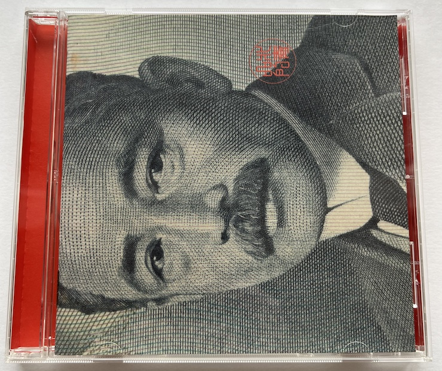
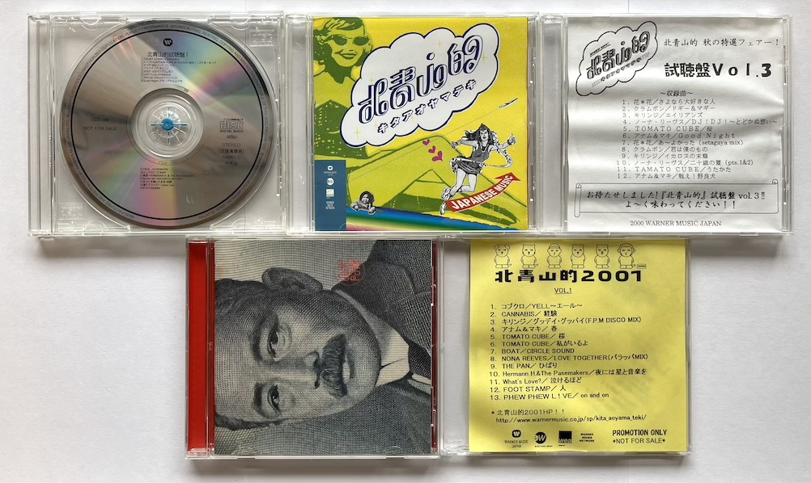
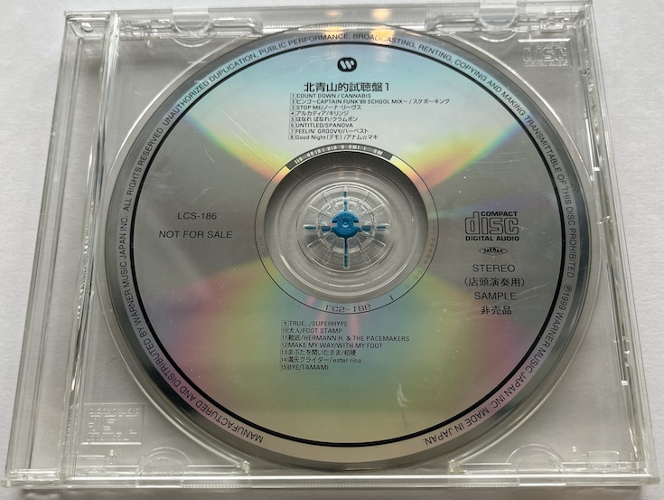
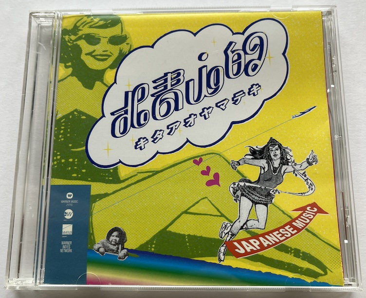
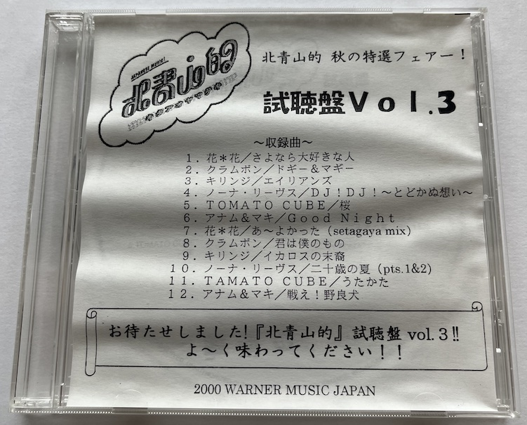
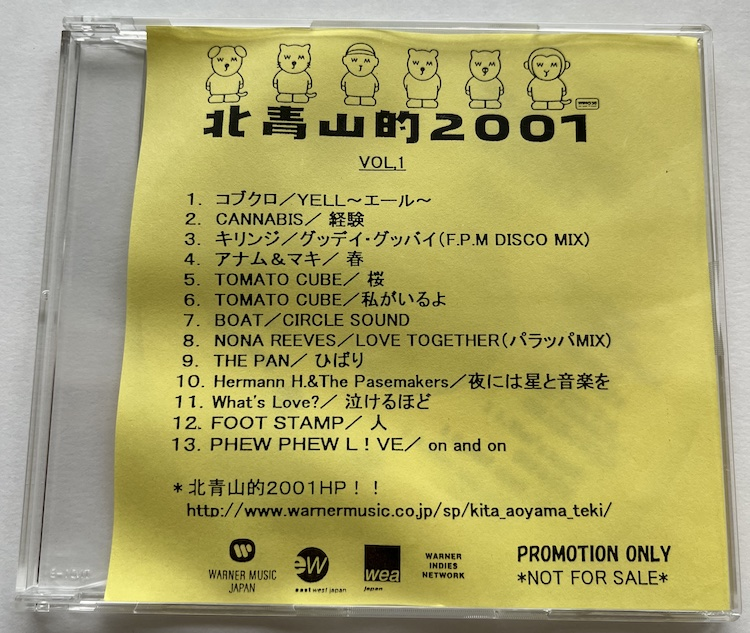

2001年にワーナーミュージック・ジャパンから発売された「北青山的13曲1000円」 というコンピレーションアルバム。当時千円札の肖像だった夏目漱石のジャケットが印象的です。
当時若手だったコブクロやキリンジの曲が収録されていることで知っている人もいることでしょう。 私はBOaTの「ALL」が入っていたので巡り会いました。
タイトルにあるのは 「下北系」 でも 「渋谷系」 でもなく「北青山的」。言われてもピンと来ない人が多いでしょう。
今回は、時代の波に飲まれて今となっては簡単には分からなくなってしまった、「北青山的」について調べた内容です。
「北青山的」の定義
まず結論から書くと、「北青山的」とは音楽スタイルではなく、レーベルの都合で定義されたブランドで、名付け親は「北青山的13曲1000円」の発売元でもあるワーナーミュージック・ジャパンです。
これは、ワーナーの「北青山的」ウェブサイト1 のアーカイブから辿れるページにも明記されています。
｢北青山的｣とはワーナーミュージック・グループがお送りする安心のブランド・ネーム。時代を映す良質の音楽を作り出すアーティスト達を総称して｢北青山的｣と名付けました。ジャンル的にはバラバラですが、どのアーティスト達をとってもご満足いただけるラインナップです。
2001年4月のアーカイブ では「北青山的2001〜渋谷系？新宿系？いやいや『北青山的』でしょ！〜」と大きく書かれており、渋谷系や新宿系といった括りが意識されていたことが窺えます。
「北青山的」キャンペーンとして、「北青山的」キャンペーン実施店舗で、「北青山的」携帯ストラップや、「北青山的」ステッカーを配布したり、「北青山的視聴盤」のプレゼントや、「北青山的LIVE」と冠した招待ライブの開催を全国で行っていたようです。詳細は、後ほど説明します。
なぜ「北青山」が選ばれたのか？
次に、「北青山的」となった理由を解明していきます。
北青山的は、単にワーナーの事務所が北青山にあるってことだけの企画だった記憶が😂
— uehrakiko (@uehra) January 11, 2026
調べてみると理由はシンプルで、ワーナーの事務所が北青山にあったからということのようです。プレゼント企画の応募ページ の住所も東京都港区北青山になっておりほぼ間違いないでしょう。フジテレビやTBSを「お台場」とか「赤坂」とか言うような感覚だったのでしょうか。
「北青山的」と「北青山的2001」
「北青山的」について調べていくと、「北青山的」だけでなく「北青山的2001」と書かれた資料があることがわかります。「北青山的」がスタートしたのは2000年です。「北青山的2001」の雑誌広告の「北青山的2001キャンペーン」の紹介に、
ワーナーミュージック・ジャパン創立30周年を記念して昨年よりスタート。 花＊花、スケボーキングなどをいきなり輩出し大注目を浴びた「北青山キャンペーン」が今年さらにPOWER UP!
と書かれていることからわかります。リニューアルの意味も込めて2001を付けたのでしょうか。
片付け中。北青山的、ありましたね…
— ミア (@mia_cider) May 19, 2025
これは雑誌広告。北青山的2001
キリンジは2000年のお写真ですね。 pic.twitter.com/Va1PVlI4aK
「北青山的」公式サイトはちょくちょく更新されていたようで変遷を辿ると面白いです。 2000年11月のアーカイブには「北青山的恋愛相談」「北青山的色占い」のページもあります。
2000年のキャンペーンと2001年のキャンペーンは「北青山的」のロゴでも判別可能です。
「北青山的」の認知
色々書いてきましたが、事務局により様々なキャンペーンが実施されていたとはいえ、今まで説明してきたような「北青山的」の意味を深く理解していた人はそう多くなかったのではないかと考えています。
2001年頃、北青山的ライブを見に行った。何バンドかやった中でコブクロが出たのは覚えてる。当時私は上京したばかりで、青山でさえよく分からないのに、北青山的ってなんだろうと思った。
— yoppesan (@1205uzonke) March 9, 2021
福岡の情報誌 シティ情報ふくおか 2001年8月-2 では、「北青山的LIVE 2001」の説明が「『北青山的』って？まずは聴くべし」「『北青山的』って？頭で考えるよか、まずはこのラインナップを見よう！」となっていました。説明を書いた人も「北青山的」が何だかよくわかっていなかったり、分かっていても短いスペースの中では説明しようという気にはならなかったのでしょう。
アナム&マキが出演していた番組に関する記録 を見ても、「“渋谷系”というのは知っていたけど、“北青山系”ですか? 」と書かれています。
「北青山的」アーティスト
さて、「北青山的」の概要が分かったので、次に「北青山的」としてプッシュされていたアーティストを見ていきましょう。
北青山的
2000年10月頃 のリストです。当時の紹介ページへのリンクを貼っておきますので、説明を読みたい場合はそちらにどうぞ。
後に出てくる「北青山的視聴盤 Vol.2」のブックレットに書かれているリストと同じです。
WARNER MUSIC JAPAN GROUP
WARNER INDIES NETWORK
- SUPERHYPE
- FOOTSTAMP
- Hermann H. & The Pacemakers
- WiTH MY FOOT
- 桔梗
- ester rina
- TAMAMI
- Voo Doo Hawaiians
- THE PAN
- ギャラクティカ☆マグナム
北青山的2001
2001年のキャンペーンサイト に掲載されていたアーティストです。「北青山的2001」の雑誌広告のリストとも同一です。
- CANNABIS
- ノーナ・リーヴス
- キリンジ
- クラムボン
- アナム＆マキ
- トマト・キューブ
- BOAT
- FOOT STAMP
- ヘルマンH. & ザ・ペースメーカーズ
- THE PAN
- What’s Love?
- PHEW PHEW L!VE
- コブクロ
「北青山的」アーティストのメジャー側中心ですね。スケボーキング、SPANOVA、花＊花、RYO THE SLYWALKERが外れてインディー側からFOOT STAMP、ヘルマン、THE PANが採用されています。
「北青山的」CD
次にリリースを見ていきましょう。
「北青山的」と銘打たれているCDで店頭で発売されたものは私が知る限り「北青山的13曲1000円」のみです。トラックリストは次のようになっています。
北青山的13曲1000円
- 発売日: 2001-08-08
- 品番: WPC6-10149
- 期間限定生産
- コブクロ「Bell」
- 収録: シングル「YELL〜エール〜」WPC6-10123
- リリース: 2001-03-22
- クラムボン「サラウンド」
- 収録: シングル「サラウンド」WPCV-10125
- リリース: 2001-05-23
- キリンジ「エイリアンズ」
- 収録: シングル「エイリアンズ」WPC6-10108
- リリース: 2000-10-12
- ノーナ・リーブス「LOVE TOGETHER」
- 収録: シングル「LOVE TOGETHER」WPC6-10077
- リリース: 2000-03-23
- 森広隆「ただ時が経っただけで」
- 収録: «インディーズ盤»ミニアルバム「ゼロ地点」bounce-0038
- リリース: 2001-06-15
- アナム＆マキ「戦え！野良犬」
- 収録: シングル「戦え！野良犬」WPC7-10046
- リリース: 2000-07-12
- TOMATO CUBE「choose my life」
- 収録: アルバム「TOMATO CUBE」WPC7-10102
- リリース: 2001-05-23
- THE PAN「情熱」
- 収録: シングル「情熱 / 悲しみの雨」WPC6-10130
- リリース: 2001-06-06
- FOOT STAMP「人」
- 収録: アルバム「こけつまろびつ」WINN-82048
- リリース: 2000-09-28
- CANNABIS「誓いの空」
- 収録: アルバム「アストロダンス」AMCM-4539
- リリース: 2001-07-11
- BOAT「ALL」
- 収録: ミニアルバム「RORO」AMCN-4527
- リリース: 2001-04-11
- Hermann H. & The Pacemakers「fruity machine gun」
- 収録: ミニアルバム「INPUT!」WINE-82027
- リリース: 2000-03-24
- What’s Love?「かえり路」
- 収録: シングル「かえり路」WPC6-10133
- リリース: 2001-06-06
収録されているアーティストは、PHEW PHEW LIVEが抜けて森広隆が入っていることを除き、「北青山的2001」のメンツと同じですね。
帯は「北青山的2001 LIVE」の入場チケットを兼ねており、PC等で登録した人から先着でライブに参加できたようです。
下のプレイリストでは、#6「戦え！野良犬 / アナム＆マキ」、#9「人 / FOOT STAMP」はSpotifyで配信されていないことを鑑み、「-2」としています。
実は、「北青山的13曲1000円」以外の「北青山的」CDが(少なくとも)4枚存在します。それは、プロモ盤として製作された「北青山的視聴盤」Vol.1-3および「北青山的2001 Vol.1」です。
前者は2000年の「北青山的」キャンペーン、後者は2001年の「北青山的2001」キャンペーンと県警します。

他にもある可能性がありますが、未確認です。詳細をご存知の方はお知らせください。
北青山的視聴盤１

- プレスCD
- 品番: LCS-186
- CANNABIS「COUNT DOWN」
- 収録: ミニアルバム「COUNT DOWN」WINE-2015
- リリース: 1999-10-28
- スケボーキング「ビンゴ〜CAPTAIN FUNK'89 SCHOOL MIX〜」
- 収録: アルバム「SUPER BEST」WPCV-10057
- リリース:2000-01-26
- ノーナ・リーヴス「STOP ME」
- 収録:シングル「STOP ME」WPC6-10042
- リリース: 1999-11-10
- キリンジ「アルカディア」
- 収録:シングル「アルカディア」WPC6-10064
- リリース: 2000-01-19
- クラムボン「はなれ ばなれ」
- 収録: シングル「はなれ ばなれ」WPC7-10013
- リリース: 1999-03-25
- SPANOVA「UNTITLED」
- 収録: アルバム「Super Ball」WPC7-10012
- リリース: 1999-05-26
- ハーベスト「FEELIN’ GROOVY」
- 収録: シングル「FEELIN’ GROOVY」WPC6-10051
- リリース: 1999-12-10
- アナム☆マキ「Good Night（デモ）」
- 収録: シングル「Good Night」WPC7-10054
- リリース: 2000-09-27
- SUPERHYPE「TRUE」
- 収録: ミニアルバム「Supehype」WINE-2010
- リリース: 1999-09-30
- FOOT STAMP「大人」
- 収録: ミニアルバム「叫び続け」WINN-82020
- リリース: 2000-02-24
- HERMANN H & THE PACEMAKERS「靴底」
- 収録: アルバム「HEAVY FITNESS」WINE-2013
- リリース:1999-10-07
- WiTH MY FOOT「MAKE MY WAY」
- 収録: ミニアルバム「DON’T FADE OUT… JUST MAKE MY WAY」WINE-2016
- リリース: 1999-11-11
- 桔梗「まぶたを開いたまま」
- 収録: アルバム「桔梗」WINN-82021
- リリース: 2000-02-24
- ester rina「満点グライダー」
- 収録: アルバム「エンダイヴ」WINN-82024
- リリース: 2000-01-27
- TAMAMI「BYE」
- 収録: シングル「BYE」WINN-82023
- リリース: 2000-02-24
「北青山的」アーティストのWARNER MUSIC JAPAN GROUP所属から8曲、WARNER INDIES NETWORK所属から7曲選ばれています。途中までの順番はウェブサイトと同じですね。
残念ながら私が入手したものはブックレットが欠品していたようです。別の出品ではブックレットの存在が確認できます。
【販促CD】 北青山的 試聴盤 vol.1 & 3 二枚セット - メルカリ (Archive)
ブックレットを見る限り、音楽ライターやラジオ局、CDショップのバイヤーに配るプロモ盤のようです。
おそらく、この視聴盤が配られた頃は、ワーナーミュージック・ジャパンが「北青山的」を広めようとしている頃で、下のような記載があります。
「北青山的」キャンペーンワーナーミュージック・グループがお届けする、邦楽新人・育成アーティストの共同キャンペーン、それが「北青山的」。
「北青山的」なアーティストを様々な露出・セール展開・話題作りによって広く世に知らしめていこうという共同キャンペーンです。
本サンプラーCDには、「北青山的」な対象アーティストの楽曲が収録されています。今後の「北青山的」アーティストにどうぞご注目下さい。
「北青山的」視聴盤VOL.2

- プレスCD
- 品番: LCS-204
- 花＊花「あ〜よかった」
- TOMATO CUBE「うたかた」
- スケボーキング「CHILD REPLAY」
- CANNABIS「妄想R」
- BOaT「狂言メッセージ」
- クラムボン「君は僕のもの」
- アナム&マキ「戦え！野良犬」
- キリンジ「君の胸に抱かれたい」
- SUPERHYPE「NUMBER FUTURE」
- RYO the Skywalker「SUNNY DAY WALK」
- Hermann H. & The Pacemakers「Loser’s Parade」
- esterrina「すてきな空」
- THE PAN「かわらないもの」
- ギャラクティカ★マグナム「夕凪」
- VooDoo Hawaiians「番犬」
ブックレットの収録予定曲では#7の曲名が「未定」となっています。
Vol.3まで存在が確認されている視聴盤のうち、なぜかVol.2のアートワークだけが凝った作りになっています。メルカリやヤフオクで出品を見かけることが多いのもVol.2です。
アートワークは 公式ウェブサイト とかなり似てますね。
CDについてきたシールを集めると視聴盤Vol.2がもらえるキャンペーン が開催されていたのが理由でしょう。
関係者向けだった他の視聴盤とは違い、一般の手に渡るプロモーション盤のため、凝った作りにしたのではないでしょうか。
「北青山的」視聴盤Vol.3

- プレスCD
- 品番: LCS-211
- 花＊花「さよなら大好きな人」
- クラムボン「ドギー&マギー」
- キリンジ「エイリアンズ」
- ノーナ・リーブス「DJ!DJ!〜とどかぬ思い〜」
- TOMATO CUBE「桜」
- アナム＆マキ「Good Night」
- 花＊花「あ〜良かった (setagaya mix)」
- クラムボン「君は僕のもの」
- キリンジ「イカロスの末裔」
- ノーナ・リーヴス「二十歳の夏 (pts.1&2)」
- TOMATO CUBE「うたかた」
- アナム＆マキ「戦え！野良犬」
WARNER MUSIC JAPAN GROUPに所属していた「北青山的」アーティスト6組から2曲ずつ選曲されています。
北青山的2001 Vol.1

- CD-R
- 品番: 記載なし
- コブクロ「YELL〜エール〜」
- CANNABIS「経験」
- キリンジ「グッディ・グッバイ (F.P.M DISCO MIX)」
- アナム&マキ「春」
- TOMATO CUBE「桜」
- TOMATO CUBE「私がいるよ」
- BOAT「CIRCLE SOUND」
- NONA REEVES「LOVE TOGETHER (バラッパMIX)」
- THE PAN「ひばり」
- Hermann H. & The Pasemakers「夜には星と音楽を」
- What’s Love?「泣けるほど」
- FOOT STAMP「人」
- PHEW PHEW L!VE「on and on」
「北青山的2001」のリストと比較すると、クラムボンの曲がなく、TOMATO CUBEの曲が2曲収録されています。
他にも、サンプラーCDには「北青山的」マークが入っていたようです。
そういえば…ノーナリーブスのフリーサンプラーCD（8cm）持ってたな…って思って探したら、ミニリーフレットと共に出てきた…2000年だったw
— ろくろう (@mcz_orz) March 8, 2020
「北青山的」…そういやそういうジャンル分けしてたっすよね…今思えば、ちょっと小っ恥ずかしい pic.twitter.com/eibzfVGMpW
「北青山的」LIVE
キャンペーンの一環として開催されていたライブの情報です。
セットリスト等は、当時のタイムテーブルの資料をアップされている方や、ライブレポの情報をもとにしています。
2000年のライブの情報はこちらを元にしています。
2000-08-18 北青山的LIVE 東京会場
渋谷 ON AIR EAST と ON AIR WEST の2拠点で開催。チケットを持っていれば、相互に行き来できたようです。
渋谷 ON AIR EAST
- 18:00 WITH MY FOOT
- GOOD MUSIC MAKES MY DAY
- MAKE MY WAY
- NEVER LONE
- FALLIN’ DOWN
- YOUR LIFE
- FADE OUT
- LYING ON MY BED
- 18:30 Hermann H. & The Pacemakers
- 19:00 FOOT STAMP
- 人
- 罠
- 夢への戦
- この声潰すまで
- 大人
- 19:30 桔梗
- 3秒前のことを忘れる人
- Goin’ Nowhere
- まぶたを開いたまま
- パンダのダンス
- MA WAY
- みみなり
- Pain
- 太古の未来
- FREE BIRD
- 20:00 Boat
- Listening 13（Flush Fast）
- Planet Foxy
- 紋味
- スマート・ボール
- 狂言メッセージ
- 雲番人Bと釣人A
- DON’T YOU
- 20:40 スケボーキング
- トピックス
- HAPPY FUTURE
- いつかどこか
- Child’s Replay
- 神経衰弱
- 21:20 キリンジ
- アルカディア
- 千年末に降る雪は
- むすんでひらいて
- ダンボールの宮殿
- (アンコール) 茜色したあの空は
- 21:50 終演予定
渋谷 ON AIR WEST
- 18:00 THE PAN
- 常識かぶれ
- アスファルト
- スタートライン
- ひばり
- かわらないもの
- 18:30 ギャラクティカ☆マグナム
- Travelin’ Man
- 夕凪
- カナリヤ
- 月が微笑ムカラ
- 19:00 ester rina
- 右手左手
- すてきな空
- A survant Festival
- 満天グライダー
- 19:30 Harvest
- Good Day
- ジャングル ジム
- シンシア
- センチメンタル・アフェア
- Feelin’ Groovy
- 20:10 アナム&マキ
- 愛のテレパシー
- 確認
- Good Night
- にんにく
- あの頃
- 戦え！野良犬
- 20:50 TOMATO CUBE
- 眠り足りない休日
- あの娘の唄
- 桜
- うたかた
- Choose my life
- 21:30 花＊花
- 赤い自転車
- ひまわりの花
- 雨の雫
- 空の青
- あ〜よかった
- ずっと一緒に
- 22:00 終演予定
2000年8月18日、ちょうど25年前の今日、ワーナーミュージック主催の｢北青山的LIVE｣というイベントに行きました。
— Lotsi (@Lotsi12) August 18, 2025
BOaTは｢スマートボール｣や｢DON'T YOU｣、トリだったキリンジは｢アルカディア｣と好きな曲をじっくり堪能できました♪#BOaT #AxSxE #キリンジ #KIRINJI pic.twitter.com/SvCgYHM3VH
2000-08-23 北青山的LIVE福岡会場 @ 福岡 DRUM Logos
- ノーナ・リーヴス
- 桔梗
- THE PAN
- TOMATO CUBE
- Hermann H．& The Pacemakers
- アナム＆マキ
2000-08-25 北青山的LIVE 大阪会場 @ 大阪 心斎橋 BIGCAT
花＊花は「ミュージックステーション」生出演のため、ライブへの出演が中止になり、希望する人には払い戻しが行われました。
アーティスト側の希望により、2000-09-02に花＊花のみ代替ライブが設定され、当日の北青山的LIVE終了後に入場整理券が配布されました。
- ノーナ・リーヴス
- BOAT
- ギャラクティカ☆マグナム
- アナム＆マキ
- TAMAMI
2000-08-26 北青山的LIVE 名古屋会場 @ 名古屋 E.L.L
- クラムボン
- 花＊花
- WiTH MY FOOT
- FOOT STAMP
- ester rina
- VooDoo Hawaiians
- Hermann H．& The Pacemakers
2000-09-01 北青山的LIVE 北海道会場 @ 札幌 PENNY LANE 24
- クラムボン
- ノーナ・リーヴス
- 花＊花
- CANNABIS
- アナム＆マキ
- TOMATO CUBE
2000-09-02 北青山的LIVE 大阪会場 代替ライブ @ 大阪 エコルテホール
2000-08-25のライブの出演が取りやめになった花＊花のために設定された「北青山的」代替ライブ。
- 花＊花
2001-04-04 北青山的INDIES 2001 〜春のWIN〜 @ 下北沢シェルター
下はシェルターの記録を元にしています。雑誌広告だと「SOUL-D! / THE PAN / FOOT STAMP / ゼンマイ虫」となっていてNICRUSHの名前がありません。
- THE PAN
- FOOT STAMP
- ゼンマイ虫
- SOUL-D!
- NICRUSH
2001-04-05 北青山的INDIES 2001 〜春のWIN〜 @ 下北沢シェルター
下はシェルターの記録を元にしています。ヘルマンのページも同じですね。雑誌広告だと「カタクリ / 倉橋ヨエコ / What’s Love? / ヘルマンH.&ザ・ペースメーカーズ」となっていて少し違っています。
- What’s Love?
- Hermann H. & The Pacemakers
- 倉橋ヨエコ
- 藤森由利子
「北青山的2001キャンペーン」では、対象CDに「北青山的ステッカー」が貼り付けられており、ステッカーを2枚集めると抽選で「北青山的LIVE 2001」のペア招待チケットが当たる「北青山的LIVEチケット・プレゼント」が行われていました。
日程は.:::kita aoyama live info::.を参考にしています。
2001-09-02 北青山的LIVE 2001 @ 名古屋 Club Quattro
(出演順)
- クラムボン
- NONA REEVES
- BOAT
- TOMATO CUBE
- 森広隆
- ただ時が経っただけで
- Fuzz Master
- エレンディラ
- ゼロ地点
- コブクロ
2001-09-08 北青山的LIVE 2001 東京拠点
渋谷 ON AIR EAST と ON AIR WEST の2拠点で開催。チケットを持っていれば、相互に行き来できたようです。
渋谷 ON AIR EAST
(出演順)
- アナム＆マキ
- Hermann H. & The Pacemakers
- TOMATO CUBE
- 森広隆
- エレンディラ
- ゼロ地点
- ただ時が経っただけで
- Pebama
- THE PAN
- コブクロ
渋谷 ON AIR WEST
(出演順)
- CANNABIS
- FOOT STAMP
- BOAT
- Lucky Boys Confusion
- What’s Love?
- IN-HI
出演者について
この日のライブの出演者リストには不思議な点があります。 ON AIR WESTの出演者にシカゴのバンド Lucky Boys Confusion が含まれているのです。
調べてみると、Lucky Boys Confusionの公式YouTubeに動画があり、2001年9月5日〜14日で確かに来日していたようです。2
また、Discogsには、Lucky Boys Confusionの「Throwing the Game」の日本盤プロモCDが登録されており、レーベルはEast West Japanとなっています。これはワーナーミュージック・ジャパン傘下のレーベルで、CANNABISと同じです。
あくまで私の仮説ですが、
- 2001年5月にワーナー系のElektra Recordsからメジャーデビュー
- 日本盤はワーナー傘下のEast West Japanがリリース
- 同じワーナーグループという繋がりで、9月の来日プロモーションツアーに合わせて北青山的LIVEへの出演が組まれた
ということなのではないでしょうか。
2001-09-12 北青山的LIVE 2001 @ 札幌ファクトリーホール
台風15号の影響により、当日の北海道は悪天候だったようだが、公演は開催された模様です。
北青山的キャンペーン事務局は、「9/12(水)北青山的LIVE'01 札幌公演について」 という掲示をHP上に出していました。
(出演順)
- ノーナ・リーヴス
- クラムボン
- THE PAN
- 森広隆
- エレンディラ
- ゼロ地点
- ただ時が経っただけで
- Fuzz Master
- TOMATO CUBE
- コブクロ
- コンパス
- 桜
- YELL－エール－
- 轍－わだち－
- (アンコール)ストリートのテーマ
2001-09-16 北青山的LIVE 2001 @ 福岡 DRUM LOGOS
(出演順)
- CANNABIS
- 森広隆
- Hermann H. & The Pacemakers
- THE PAN
- ハイリミッツ
- コブクロ
2001-09-28 北青山的LIVE2001 @ 大阪 心斎橋 BIG CAT
(出演順)
- ノーナ･リーヴス
- 森広隆
- エレンディラ
- ゼロ地点
- ただ時が経っただけで
- Pebama
- What’s Love?
- Hermann H. & The Pacemakers
- アナム&マキ
- (スペシャルゲスト)
「北青山的」アーティストの今
早いもので、「北青山的」が提唱されてから20年以上が経過しています。 2026年4月現在の「北青山的」アーティストの動向について調べました。
まずは「北青山的13曲1000円」のアーティストから。
コブクロ
黒田俊介と小渕健太郎による音楽デュオ。2001年にメジャーデビューし、その後「ここにしか咲かない花」、「桜」（2005年）や「蕾」（2007年）などのミリオンヒットを連発し、日本レコード大賞を受賞。2011年8月に休業を発表したが、約半年後の2012年7月に復活を宣言し、変わらぬスタンスで活動を継続。
紅白歌合戦には8回出場し、テレビCMとなった曲も数多い。2025年開幕の大阪・関西万博では公式テーマソング「この地球の続きを」を担当し、現在も精力的にライブツアーを展開するなど、第一線に立ち続けている。
クラムボン
クラムボンは独自のインディーポップサウンドで着実にキャリアを積み上げ、音源リリースのみならずライブパフォーマンスでも高い評価を受け、コンスタントにアルバムをリリース。
2023年2月の東京ガーデンシアター公演を大きな節目として、その後「ポジティブな巣ごもり」期間に入りライブ活動を一時休止。休止中も旧譜のアナログ盤化など作品のリリースは継続しており、再始動が待たれる。
なお2023年のインスタグラムの投稿で「#北青山的」のハッシュタグを使っており、キャンペーンへの愛着が今も続いていることが窺える。
KIRINJIの堀込高樹さんの番組📻α-STATION 「NEW MUSIC, NEW LIFE」
におじゃましてきました✌️✌️✨
#nnキョウト #堀込高樹 #KIRINJI #キリンジ #原田郁子 #clammbon #クラムボン #北青山的
KIRINJI（キリンジ）
2000年代初頭、キリンジは兄・堀込高樹と弟・堀込泰行による兄弟デュオとして洗練されたポップサウンドを展開。「北青山的13曲1000円」に収録された「エイリアンズ」は時2000年代を代表するポップソングとして認知されている。
2013年に弟・泰行がソロ活動のために脱退。兄・高樹はバンド編成の新体制「KIRINJI」として活動を継続し、2021年からは堀込高樹のソロプロジェクトとなった。精力的なライブ活動とともに、2026年1月には通算17枚目のニューアルバム「TOWN BEAT」を発表するなど、現在も活躍中。
ノーナ・リーヴス
1997年にワーナーミュージック・ジャパンからメジャーデビュー。「北青山的」時代からコンスタントに活動を続け、2020年には自身のレーベル・daydream park recordsを設立し、メジャーレーベルから独立した。
解散・休止とは無縁のまま活動を継続しており、2026年4月にはビルボードライブ東京でのライブが決定。また、1stアルバムのリリースから30周年となる2026年に向けて、インディー・デビュー作「SIDECAR」の初アナログ化も果たすなど精力的な動きを見せている。ボーカルの西寺郷太は80’s音楽の書き手・語り手としても知られ、藤井風「真っ白」への小松シゲルのドラム参加など、メンバーそれぞれが他アーティストとの交流も深めながら活動を続けている。
西寺郷太はクラムボンの結成20周年記念トリビュートアルバムに「ワーナー同期組、『北青山的』の根性見せたで。」とコメントを寄せており、「北青山的」の繋がりが今も続いていることが確認できる。
森広隆
鹿児島県出身のシンガーソングライター。2001年にワーナーミュージック・ジャパンよりシングル「ただ時が経っただけで」でメジャーデビュー。「北青山的LIVE 2001」全公演に出演した、キャンペーン後半の顔ともいえる存在だった。
2005年以降はインディーズで活動を継続。「Coa」名義でのプロデュース・アレンジ・楽曲提供もこなしながら、自身のアコースティックライブシリーズ「Mellow Tones」を長年にわたり続けてきた。2022年に表立った活動を再開。
2024年7月にはニューアルバム「よるにこがれて」をリリースした。2026年3月9日には三軒茶屋GRAPEFRUIT MOONにて「mellow tones Vol.46」を開催しており、現在も精力的に活動中。
アナム＆マキ
河島亜奈睦（アナム）と本夛真季（マキ）による2人組。1995年に大阪の高校のフォークソング部で結成し、2000年にWEAジャパンからシングル「戦え！野良犬」でメジャーデビュー。2008年12月31日をもって活動休止。以後、ユニットとしての再結成情報はない。
アナム（河島亜奈睦）は故・河島英五の次女。休止後はソロアーティストとして再始動し、父の歌唱音源と自身のカバーを収めた2枚組CD「セルフ・アンド・カバー 2016〜生きてりゃいいさ〜」（2016年）や、ソロアルバム「姿」（2017年）をリリース。弟・河島翔馬のサポートや子ども番組への楽曲提供、海外でのストリートライブなど幅広く活動。
マキ（本夛真季）も「本夛マキ」名義でソロ活動を継続中。2026年4月時点で公式サイトのライブ情報が更新されており、愛媛・徳島・大阪・福井など各地でのライブを精力的にこなしている。
TOMATO CUBE
西村ちさと（Vo）、山元全（Gt）、高橋竜大（Gt）の3人組。2000年にワーナーミュージック・ジャパンよりデビュー。2001年4月リリースのシングル「私がいるよ」がテレビアニメ「ONE PIECE」のエンディングテーマに起用され注目を集めた。2002年にボーカルの西村ちさとが脱退し事実上の解散。
西村は脱退後、2004年に金谷タツキとMellowClapを結成。バンド活動と並行してソロ活動や楽曲提供を行い、現在もボーカリスト・作詞家としての活動を続けている。
ギタリストの山元全と同じ名前で「絵本うたい屋」として活動されている人物がおり、「ワンピース」のエンディング曲も手がけたとある。高橋竜大の現在の活動はウェブ上では確認できない。
THE PAN
1998年に長野県で結成された3ピースパンクバンド。ザ・ブルーハーツのコピーバンドからスタートし、2001年6月にワーナーインディーネットワークからメジャーデビュー。2004年にベース・ドラムが脱退。2005年にベスト盤「458967/h」をリリース後、活動休止状態に入った。
その後の動向として、ボーカル・ギターの荻原剛はレコーディングエンジニアとして長野を拠点に活動しており、他バンドのレコーディングを手がけている。ベースの市川大輔は荻原とともにTEAM VERYSを結成し都内を中心に活動（現在は休止中）。ドラムの貴一郎は長野で旅館の若旦那として活動しているとのブログ記録がある。
2018年, 2025年にはライブも行われており、完全に活動停止しているわけではないようだ。
FOOT STAMP
新潟県出身の3ピースロックバンド。1997年結成、2003年にバップよりメジャーデビュー。ブランキー・ジェット・シティや長渕剛からの影響を感じさせる骨太なロックサウンドが身上で、2004年にはSUMMER SONIC大阪にオープニングアクトとして出演。2007年に解散後、2010年に一時再結成したが再び活動停止状態となった。
ボーカル・ギターの後藤貴光は解散後、約10年間音楽活動から離れ子育てに専念。2020年の新型コロナによる自粛期間を機に弾き語り動画をSNSで配信し音楽活動を再開、新潟のFMラジオ出演で大きな反響を得た。2021年にはバンドとしての活動も再開。新潟県燕市を拠点に現在もマイペースに活動を続けている。
CANNABIS
2003年3月6日に解散。しかしメンバーの一人、キーボードの蔦谷恒一（現・蔦谷好位置）はその後、音楽プロデューサーとして日本音楽界の第一線に躍り出た。
2004年よりクリエイター集団 agehasprings に参加。以降、YUKI、Superfly、JUJU、ゆず、エレファントカシマシ、米津玄師、Official髭男dismなど錚々たるアーティストへの楽曲提供・プロデュースを手がけ、日本レコード大賞を複数受賞した。
また興味深いことに、蔦谷は2004年から2010年まで、同じ「北青山的」出身のBOaTのAxSxEが中心となって結成したハードコア・フリージャズバンドNATSUMENにも在籍しており、AxSxEとの繋がりを「北青山的」後も持ち続けた。「北青山的」から後に日本音楽界を代表するプロデューサーが生まれていたというのは、なかなか感慨深い。
BOaT
1996 年に結成したロックバンド。2001年9月28日に下北沢CLUB Queでの最終公演をもって解散。ラストアルバム「RORO」はジャパニーズポストロックの名盤として評価され、廃盤後は中古市場でプレミア価格で取引されていたが、2022年夏にサブスク解禁され広く聴けるようになった。
リーダーのAxSxEは解散後、NATSUMENを結成する一方、木村カエラへの楽曲提供も継続。「L.drunk」「STARs」「マスタッシュ」「マミレル」など多数のシングルを手がけ、カエラとの長期的なコラボレーションを続けた。サウンドエンジニアとしても活動し、神聖かまってちゃんなど多くのアーティストに携わっている。
Hermann H. & The Pacemakers
1997年結成のロックバンド。2005年に活動休止するも2012年に再始動。
2016年にボーカルの岡本洋平が下咽頭癌（ステージ4）を発症し療養。喉の全摘出を迫られる状況でも抗がん剤と放射線治療を継続し、2018年3月に完全復活を宣言した。
その後も闘病は続き、2024年頃には中咽頭癌と舌癌を併発し摘出手術。そして2026年3月には中咽頭癌の再発により再度入院治療に入っている。岡本本人は「幸い早期発見で転移もなく、まずは寛解、将来的には根治を目指す」と発表している。
What’s Love?
1997年結成の歌謡スカバンド。仙台の高校同窓生だったマッツ（松本雅光、Vo/G）、AG（菅野英児、Dr）らが中心となり結成。レゲエ・スカをベースに昭和歌謡テイストを大胆に取り入れた「歌謡スカ」スタイルが特徴で、2001年にワーナーインディーネットワークよりメジャーデビュー。
メンバーチェンジを重ねながら現在も活動を継続中。Instagram（@ska_whats_love）は650投稿超と更新が続いており、最近の活動として2024年8月には昭和歌謡カバーの7インチシングルを2タイトル同時リリース。「あの鐘を鳴らすのはあなた」には横山剣と小島真由美、「赤いスイートピー」にはBONNIE PINKが参加するなど、ゲストも豪華だ。
花＊花
「北青山的」キャンペーン中の2000年にリリースした「あ〜よかった（setagaya-mix）」がヒットし、同年の第51回NHK紅白歌合戦に異例のスピードで出場。
2003年に所属事務所の倒産により活動休止したが、2009年に再始動。その後もコンスタントに活動を続け、2025年6月にはデビュー25周年記念アルバム「BOARDING GATE.25」をリリース。ラジオ大阪やBAN-BANラジオでのレギュラー番組を持ちながら、ライブ活動も継続している。
2026年3月にはサンミュージックプロダクションへの移籍が発表され、「更なる表現の可能性を広げ、新たな挑戦を行うための前向きな決断」として新たな章に入った。
「北青山的」時系列
完全に買い目できたわけではないので、私の予想が含まれています。
- 2000年?月 「北青山的」プロジェクト始動
- 2000年4月 「北青山的ホームページ」はこの時期には存在していたようです
- 2000年7月 「北青山的ホームページ」リニューアル
- 2000年8月〜2000年9月 「北青山的LIVE」開催
- 2000年?月 「北青山的視聴盤1」配布
- 〜2000年12月 「北青山的試聴盤Vol.2」プレゼントキャンペーン
- 2000年?月 「北青山的視聴盤Vol.3」配布
- 2001年3月 「北青山的2001キャンペーン」スタート
- 2001年4月 「北青山INDIES 2001〜春のWIN」開催
- 2001年?月 「北青山的2001 Vol.1」配布
- 2001年8月 「北青山的13曲1000円」リリース
- 2001年9月 「北青山的LIVE 2001」開催
- 2002年 「北青山的2002」キャンペーンは開催されず、自然消滅
最後に
国会図書館や古本屋に行く時間がなかったため、当時の音楽雑誌やチケットガイドなどは調査できていません。
このページに載っていない「北青山的」情報があればぜひお知らせください。追記します。
参考
最後に、この記事を作成するにあたって参考にした資料の一覧を掲載しておきます。
「北青山的」ホームページ
- Various Artists / ヴァリアス・アーティスト「北青山的13曲1000円」 | Warner Music Japan
- 北青山的 (Internet Archive) 2000-08-17のアーカイブ、現存するアーカイブでは最古のトップページ
- 北青山的キャンペーン (Internet Archive) 2000-10-17のアーカイブ
- 北青山的キャンペーン (Internet Archive) 2001-06-05のアーカイブ
- 北青山的キャンペーン (Internet Archive) 2001-10-07のアーカイブ
「北青山的」の認知について
- Xユーザーのyoppesanさん: 「2001年頃、北青山的ライブを見に行った。何バンドかやった中でコブクロが出たのは覚えてる。当時私は上京したばかりで、青山でさえよく分からないのに、北青山的ってなんだろうと思った。」 / X
- シティ情報ふくおか 2001年8月-2 シティ情報ふくおか 2001年8月-2 | シティ情報ふくおか WEB歴史館 の1ページ。2001-09-16の「北青山的LIVE 2001」福岡公演の紹介がある
- 真夜中の王国 - Wikipedia
- _message board_ アナム＆マキが出演していた「真夜中の王国」に関するコメントがある
- m_i_s_a_t_oo_f_f_i_c_i_s_l_s_i_t_e___ 渡辺美里・井ノ原快彦が司会を務めていたNHK BS2のテレビ番組「真夜中の王国」にアナム＆マキが出演し、「北青山的」について語っていた模様です。
「北青山的」CD
- 【販促CD】 北青山的 試聴盤 vol.1 & 3 二枚セット - メルカリ [Archive]
- 北青山的プレゼント (Internet Archive) 北青山的試聴盤vol.2のプレゼントページ
- Xユーザーのろくろうさん: 「そういえば…ノーナリーブスのフリーサンプラーCD（8cm）持ってたな…って思って探したら、ミニリーフレットと共に出てきた…2000年だったw 「北青山的」…そういやそういうジャンル分けしてたっすよね…今思えば、ちょっと小っ恥ずかしい https://t.co/eibzfVGMpW」 / X
「北青山的」ライブ
- 北青山的ライブ (Internet Archive) 2000年の北青山的ライブの紹介
- 北青山的ライブ (Internet Archive) 2001年の北青山的ライブの紹介
- .:::kita aoyama live info::. (Internet Archive) 北青山的LIVE 2001の日程
- 北青山的2001LIVEチケット・プレゼント (Internet Archive)
- Warner Indies Network (Internet Archive) 北青山的 INDIES 2001 ～春のWIN
- SHELTER 2001年4月スケジュール 北青山的 INDIES 2001 ～春のWIN
- 2001年4月-下北沢シェルター – ロフトアーカイブス
- BIGCAT 2001年9月スケジュール
- BOATウェブサイト Live (Internet Archive)
- キリンジ / KIRINJI (1996-2019) LIVE1997-2000 | NATURAL FOUNDATION
- clammbon.com ライブスケジュール (Internet Archive)
- cannabis-web.com (Internet Archive) 「8月27日 北青山的ライブ、会場変更と出演者決定のお知らせ」とある
- cannabis-web.com Live Infomation (Internet Archive)
- アナム＆マキ公式サイト スケジュール (Internet Archive)
- 北青山的ライブ – Rainy Day 森広隆のファンサイト
- 花花の営業活動 2000年 花＊花のファンサイト
- 月刊ELL 大須便り 9月号 NO.99
- ELL 最新 PICKUP LIVE 2000-08-26の北青山LIVEがピックアイブライブとして紹介されています
- 思ひ付きに依る頁 ★ 今までに見に行った主なライブ ★
- キリンジカタギ - live -
- キリンジカタギ ワーナーミュージック「北青山的」ライブ 2000-08-18 キリンジの出演に関して
- Hermann H.&The Pacemakers whatsnew (Internet Archive) 2000-08-18, 23, 26のライブ
- Hermann H.&The Pacemakers whatsnew (Internet Archive) 2001-04-05のライブ
- 2001年ライブ記録 : MUSIC LOVERS 2001-09-02, 2001-09-08のライブ
- NO MUSIC NO LIFE Live!! Live!! ライブレビュー (2001-2003) 2001-09-08のライブについて
- Lucky Boys Confusion - Wikipedia
- Lucky Boys Confusion - Japan 2001 - YouTube
- Lucky Boys Confusion – Throwing The Game – CD (Album, Promo), 2001 [r5552099] | Discogs
- WARNER MUSIC JAPAN–9/12(水)北青山的LIVE'01 札幌公演について (Internet Archive)
- 国土交通省 ［検証］2001年の自然災害 台風15号
- ココロの羽 ９月１２日（水） 北青山的ライブ ｉｎ 札幌 2001-09-12 コブクロの出演に関して
- ココロの羽 ２００１．９．１２ 北青山的Ｌｉｖｅ ｉｎ 札幌ファクトリーホール
- シティ情報ふくおか 2001年8月-2
「北青山的」アーティストの今
コブクロ
クラムボン
- clammbon official website : news
- クラムボンが現時点での集大成を体現した有明の夜、バンドは“ポジティブな巣ごもり”期間に突入（ライブレポート / 写真11枚） - 音楽ナタリー
- クラムボン | Skream! 特集 邦楽ロック・洋楽ロック ポータルサイト
- クラムボンミトと清野茂樹 | 清野茂樹の実況芸
- 国文学・アーカイブズ学論文データベース 特集 クラムボン 渋谷から北青山、そしてポップカルチャーの「ハブ」へ 現物は未確認です
- 青土社 ||ユリイカ：ユリイカ2015年3月号 特集＝クラムボン
キリンジ
- BIOGRAPHY | KIRINJI OFFICIAL SITE
- キリンジ プロフィール | Warner Music Japan
- 【関ジャム 完全燃SHOW】令和に活躍する若手アーティストが選ぶ最強平成ソングベスト30曲 - TOWER RECORDS ONLINE
- キリンジ - Wikipedia
ノーナ・リーヴス
- Topics - NONA REEVES Official Website
- NONA REEVESのプロフィール - 音楽ナタリー
- NONA REEVES | TOKYO | Billboard Live
- Instagram - gota_nonareeves
- clammbon(クラムボン) 結成20周年Year 特設サイト | 日本コロムビア オフィシャルホームページ
森広隆
アナム＆マキ
TOMATO CUBE
THE PAN
- THE PAN official website
- THE PAN プロフィール | Warner Music Japan
- 長野レコーディングにおいてひとつだけ気になった事 | Sleeperのブログ
- TEAM VERYS（@TEAM_VERYS）さん / X
FOOT STAMP
- FOOT STAMP - Wikipedia
- ［Things Music］「FOOT STAMP」のメジャー時代の回想物語。 | Things（シングス）｜新潟のローカルなWebマガジン
- いわむロックフェスティバル 2021年 後藤貴光
CANNABIS
BOAT
- BOaT まとめ | matsueushi
- Clingon vs BOAT｜2001｜LIVE REPORT｜CLUB Que WEBSITE
- 木村カエラ、新シングル詳細判明! 「都市伝説の女」主題歌はAxSxE作曲 - TOWER RECORDS ONLINE
- ワクワクさせる「神聖かまってちゃん」の際どさ｜LIVE万華鏡｜CREA WEB（クレア ウェブ） (Internet Archive)
Hermann H. & The Pacemakers
- Hermann H.&The Pacemakers / ヘルマン エイチ アンド ザ・ペースメーカーズ プロフィール | Warner Music Japan
- 【記事全文】ヘルマン岡本洋平、舌および中咽頭がん公表 入院・手術発表 かつて下咽頭がんステージ4根治も再発 - スポニチ Sponichi Annex 芸能
- Instagram - yoheyokamoto
What’s Love?
- What’s Love? (バンド) - Wikipedia
- What’s Love? / ワッツラヴ？ プロフィール | Warner Music Japan
- What’s Love?の歌謡カバー7インチが2タイトル・リリース決定！|ジャパニーズポップス
花＊花
- 花＊花 プロフィール | Warner Music Japan
- 花＊花
- BOARDING GATE.25 | 花＊花
- 【花＊花】事務所移籍のお知らせ | 株式会社サンミュージックプロダクションのプレスリリース
その他
- WARNER INDIES NETWORK (Internet Archive)
- キリンジカタギ - goods - (Internet Archive) 携帯ストラップ、ステッカーについて
- Listening Suicidal/Boat | 縞梟の音楽夜噺
-
http://www.warnermusic.co.jp/sp/kita_aoyama_teki/index.html ↩︎
-
動画の概要には"Lucky Boys Confusion travels to Japan from September 5, 2001 thru Sept 14, 2001." とある ↩︎